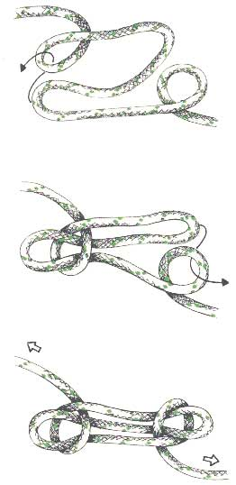

Verkortingsknoop of Trompetsteek
Gebruik
Deze knoop wordt doorgaans de trompetsteek of touwverkorting genoemd. De knoop dient om het touw te verkorten (bijvoorbeeld bij scheerlijnen van een tent), of om te voorkomen dat een van zijn delen gaat werken. Er bestaan vele varianten, maar hier wordt enkel de eenvoudigste besproken. Wil de trompetsteek niet losschieten, dan moet er op beide vaste parten druk worden uitgeoefend. Moet deze knoop lange tijd dienstdoen, dan is het raadzaam om hem met bindsels aan de uiteinden van de bochten op de vaste parten vast te zetten. Deze knoop heeft het voordeel dat hij ook kan gemaakt worden als men geen touwuiteinde bezit, zoals bij een scheerlijn van een tent.
Methode
Met het stuk touw dat ingekort moet worden legt men een Z in deze tros. Aan de punten ervan worden twee ogen gelegd waarbij de vaste parten onder liggen. De onderste dwarslijn en de diagonaal van de Z, die een bocht vormen, worden door het bovenste oog gestoken. Vervolgens steekt men de diagonale lijn en de bovenste dwarslijn van de Z, die samen ook een bocht vormen, door het onderste oog. Zit de tros in de ogen dan kan de knoop worden aangetrokken.
